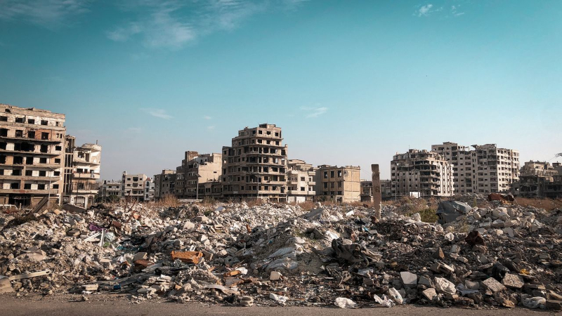

Ao sair do Banco Central de Dados, o sistema perdeu completamente a estabilidade do mapa. Os corredores do Laboratório Omega já não levavam a áreas internas. Agora levavam para fora. A transição não foi clara. Em um momento, ainda estava dentro da instalação. No outro, eu estava em uma cidade. Mas não era uma cidade viva. Era uma cidade que parecia ter esquecido como existir. Os prédios ainda estavam de pé. As ruas ainda estavam intactas. Mas não havia movimento. Não havia som. Não havia sinais de vida. As luzes dos edifícios piscavam em intervalos irregulares, como se ainda existisse energia… mas sem propósito. Sem direção. Carros estavam parados no meio das ruas. Portas abertas. Ecrãs ainda ligados exibindo mensagens antigas que não faziam mais sentido. O mais estranho não era o silêncio. Era a sensação de que tudo havia parado ao mesmo tempo. Como se a cidade tivesse sido “pausada”. Em alguns pontos, encontrei telas urbanas ainda funcionando. Elas exibiam apenas interferência.
Mas, de vez em quando, apareciam fragmentos de mensagens:
As ruas pareciam se reorganizar conforme eu caminhava. Como se a cidade estivesse tentando se adaptar à minha presença. Não havia pessoas. Mas havia sinais de que algo ainda mantinha tudo funcionando. Algo que não precisava mais de habitantes. Em um cruzamento, encontrei um painel urbano ainda aceso. Ele não mostrava trânsito. Nem clima. Nem notícias.
Apenas um único aviso repetido:
Quando tentei acessar qualquer sistema da cidade, todos responderam da mesma forma:
Mas isso não fazia sentido. Eu já havia sido registrado no sistema do Laboratório Omega. Então percebi algo estranho. A cidade não estava vazia. Ela estava… esperando. E, pela primeira vez desde o início da exploração, senti que não era apenas um visitante. Era uma variável dentro de um sistema muito maior do que o laboratório. E esse sistema já tinha começado a reagir a mim.
Prossiga para a oitava página do diário: Oitava Página do Diário